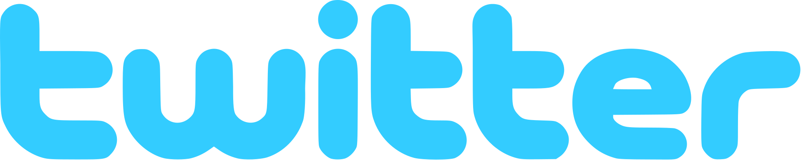
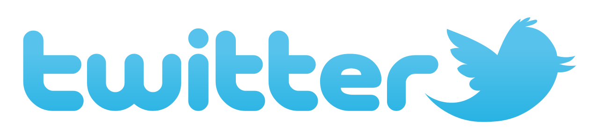

Twitter est un réseau social de microblogage géré par l'entreprise Twitter Inc. Il permet à un utilisateur d’envoyer gratuitement des micromessages, appelés tweets, sur internet, par messagerie instantanée ou par SMS. Ces messages sont limités à 280 caractères. Twitter a été créé le 21 mars 2006 par Jack Dorsey, Evan Williams, Biz Stone et Noah Glass. Le service en ligne est rapidement devenu populaire. Le 5 mars 2017, il compte 313 millions d’utilisateurs actifs par mois, 500 millions de tweets envoyés par jour et est disponible en plus de quarante langues. En 2018, Twitter annonce pour la première fois avoir fait du profit, notamment à la suite de restrictions budgétaires. Le 25 avril 2022, Twitter accepte la proposition de rachat d'Elon Musk pour la somme de 44 milliards de dollars, c'est cependant le 27 octobre 2022 qu'Elon Musk confirme le rachat des actions de Twitter et devient le nouveau propriétaire. Les mesures qu'il prend et ses déclarations après son arrivée entrainent une diminution drastique du nombre de salariés. Le siège social de Twitter Inc. se situe aux États-Unis, dans le Delaware, bien que les locaux principaux soient situés sur la côte opposée, à San Francisco.

hisroire
Twitter a été créé à San Francisco au sein de la start-up Odeo fondée par Noah Glass et Evan Williams. Noah Glass commercialisait AudBlog, une application permettant de publier des fichiers audio sur un blog au moyen d’un téléphone. Evan Williams est connu pour être entre autres le cofondateur de la société Pyra Labs, à l’origine de la plateforme de blogs Blogger, achetée par Google en 2003. Odeo proposait une plateforme d'hébergement web, de diffusion et d’enregistrement de podcasts. Le marché du podcast étant déjà très concurrentiel, Jack Dorsey, ingénieur spécialiste du dispatching, et Noah Glass, ancien collaborateur de Marc Canter (fondateur de MacroMind ) et fondateur du service de blog podcasting AudBlog (qui a fusionné avec Odeo), furent chargés de développer un nouveau service[source insuffisante]. L’idée de départ lancée par Jack Dorsey était de permettre aux utilisateurs de partager facilement leurs petits moments de vie avec leurs amis. Ouverte au public le 13 juillet 2006, la première version s’intitulait Stat.us puis Twttr, en référence au site de partage de photos Flickr puis Twitter, son nom actuel. Le 21 mars 2006, Jack Dorsey envoyait son premier tweet : « Just setting up my twttr » (« Suis en train d'installer mon twttr »), marquant la date anniversaire de la fondation de l'entreprise par Jack Dorsey, Evan Williams, Biz Stone et Noah Glass. Le 25 octobre 2006, les actifs de la société Odeo ont été achetés par Obvious Corp. Puis en avril 2007, une entité indépendante est créée avec comme nom Twitter avec Jack Dorsey à sa tête jusqu’en octobre 2008 date à laquelle Evan Williams lui succéda. En mars 2008, Twitter compte un million d’utilisateurs. La société compte 29 employés en février 200915, 300 en octobre 2010 et 900 en avril 2012. et a été racheté par elon musk en 2022
Identité visuelle

de 2006 à 2009.- 
de 2009 à 2010 - 
de 2010 à 2012 
depuis le 6 juin 2012